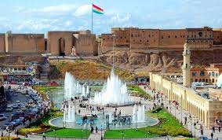

Hawler, also known as Erbil, is the capital city of the Kurdistan Region in Iraq and stands as a testament to the resilience and dynamism of the Kurdish people. With a history dating back millennia, Hawler is one of the oldest continuously inhabited cities in the world. Modern Hawler combines its ancient heritage, represented by landmarks like the historic Citadel, with a rapidly developing urban landscape. The city is a bustling center for commerce, culture, and education, hosting international events and fostering a vibrant atmosphere. Hawler encapsulates the spirit of progress in Kurdistan, blending tradition with modernity as it emerges as a key player in the region's economic and cultural landscape.
